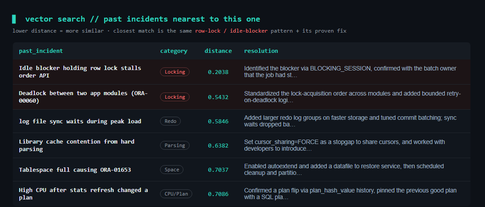
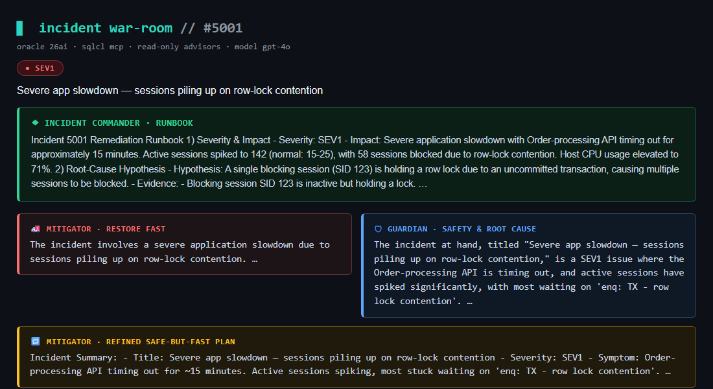

An incident war-room on Oracle 26ai — built with the SQLcl MCP Server & AI Vector Search.
What if, the moment an incident hit, two AI DBAs investigated your database and argued about the fix — one racing to restore service, one guarding against risk — and handed you a runbook? Here's how I built exactly that on Oracle 26ai.
When an incident lands, I don't ask one AI "what's wrong?" — I let three AI DBAs work it together: a Mitigator who wants service back now, a Guardian who challenges the risk and hunts the root cause, and an Incident Commander who weighs both and writes the runbook. All three read the same live diagnostics from the database.
Why make them argue? Because under pressure, the fast fix and the safe fix are often different things. "Just kill the blocking session" can roll back a half-finished batch job. Forcing both viewpoints into the open gets you a decision you can defend at the post-mortem.
sql -mcp.KILL a session, never ALTER, never run DML. When a fix needs a change, they recommend the exact command, tagged "needs approval", for a human to run. The AI investigates and advises; a person owns every change.
I also debate a captured snapshot of the incident (saved v$session/v$sql data), so running it never loads or destabilises a real database.
A classic SEV1: the order API is timing out, active sessions spiked to ~140, and 58 are stuck on enq: TX - row lock contention. The pile-up traces to one idle session — a stalled nightly batch job (SID 123) holding a row lock from an uncommitted UPDATE.
Perfect argument starter: kill SID 123 and 58 sessions free instantly… but it's a batch job mid-transaction. What happens to its work?
Before recommending anything risky, the Guardian searches the past-incident knowledge base — matching the current symptoms by meaning:

That precedent is gold: identify the blocker, confirm with the batch owner, then kill — the small transaction rolled back in seconds.
Each agent investigates with read-only SQL, then argues its case — and the Commander turns it into an ordered runbook:

The runbook marks each step [SAFE/READ-ONLY] or [CHANGE — needs approval], gives exact commands, and ends with a rollback plan and what to monitor. A junior DBA could follow it; a senior would sign off on it.
KILL is fine; executing one autonomously is not.VECTOR_DISTANCE(col, query, COSINE) with FETCH APPROX FIRST n ROWS ONLY.sql -mcp + a saved connection; every query is audited like any session.An AI that confidently says "kill the blocker" is easy to build and dangerous to trust. An AI war-room — fast vs. safe, grounded in live data and past experience, advising rather than acting — is something I'd want next to me at 2am. On Oracle 26ai, with the SQLcl MCP Server and AI Vector Search, it's a couple hundred lines of code.
// a learning demo — review any recommended command before running it on a real database.